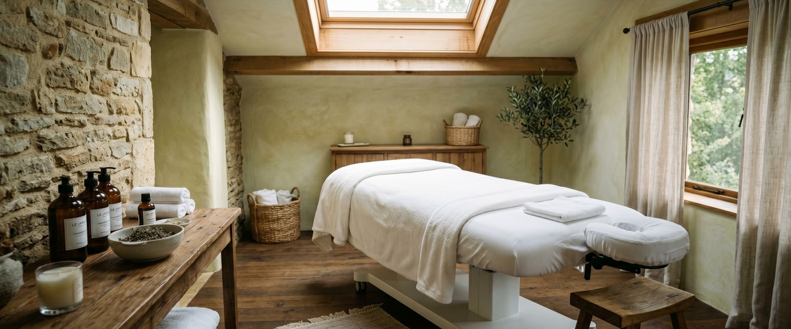
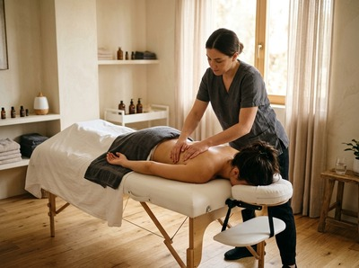
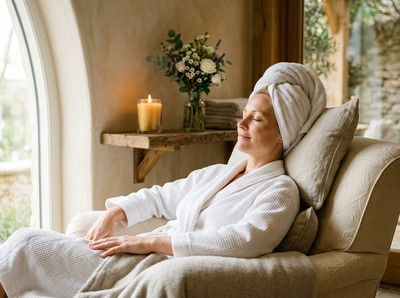

Almost six in ten adults in Scotland have experienced anxiety that interfered with their daily lives, according to Mental Health Foundation research.

That number has not shifted much in the years since it was first published. In 2026, it still sits in the background of almost every wellbeing conversation in this country.
The Scottish Government's own mental health strategy says that keeping people well requires "a range of supports in the community," not just clinical services. Therapeutic massage is one of those supports. It deserves more than a footnote.
Five years ago, most people thinking about mental health support would picture a GP referral, a waiting list, or a course of talking therapy. Those things matter and will continue to matter.
But the conversation has broadened. Scotland's mental health strategy now recognises that people need the right support in the right place. It also says that prevention is as important as treatment.

Therapeutic massage fits squarely into the prevention end of that picture. It is not a replacement for clinical care. No responsible practitioner would suggest otherwise.
But as a regular, accessible way to manage stress, ease anxiety, and improve sleep, it holds its own.
The case for massage as a mental health tool is well established. Studies show it can reduce cortisol levels by up to 31%, while raising serotonin by 28% and dopamine by 31%. These are the chemicals directly involved in mood.
Those shifts are not down to placebo alone. Research in the International Journal of Therapeutic Massage and Bodywork confirms that massage can reduce symptoms of anxiety and depression. This applies to both clinical and non-clinical groups.
That second group matters. It means people carrying the ordinary weight of modern life: long hours, money worries, poor sleep, and the slow drain of being stretched too thin.
If that sounds familiar, you can book a session at Glasgow Thai Massage and start to feel the difference.
Traditional Thai massage is rooted in the Wat Pho tradition. It uses assisted stretching, acupressure, and work along the body's sen energy lines.
It does something specific to the nervous system. The steady, rhythmic pressure tells the parasympathetic nervous system to switch on. This moves the body out of stress mode and into genuine rest.
This is not the same as sitting on a sofa with your phone. The body knows the difference between passive distraction and skilled, attentive touch.
A session at Glasgow Thai Massage works on both levels — physical and neurological — at the same time.
For people dealing with ongoing stress or anxiety, the effect builds over time. One session helps. Regular sessions create a steadier baseline.
The stress response becomes less easily triggered. Recovery from hard periods happens more quickly.
There is something particular about Glasgow city centre in 2026. Office culture has shifted. More people are back at their desks more often.
They are commuting again and dealing with the social and professional pressures that remote work had briefly paused. The result is a familiar kind of tension: tight necks and shoulders, broken sleep, and a low-level mental tiredness that builds through the week.
For office workers near Blythswood Square, St Vincent Street, or West Nile Street, Glasgow Thai Massage is a short walk from the end of the working day. That matters when the main barrier to self-care is time, not willingness.
A traditional Thai massage session takes an hour. You stay fully clothed. No complicated preparation needed.
More than four in ten adults in Scotland with feelings of anxiety keep it a secret, according to the Mental Health Foundation. That silence has real consequences. It persists even as awareness campaigns become more visible each year.

One quiet value of therapeutic massage is that it asks nothing of you. You do not need to name what you are struggling with. You do not need to describe your symptoms or navigate a referral.
You book, you come in, and the work begins. For people who are not yet ready to talk — or who simply feel better when their body is not fighting against them — that matters more than it might sound.
Mental health in Scotland deserves the full toolkit, not just the clinical one. Therapeutic massage belongs in that toolkit. The evidence, the tradition, and the results all support its place there.
You can read more in our article on massage and mental wellness. Or simply book a session and find out what an hour of skilled, attentive care actually feels like.
Yes, and there is solid research to support this. Studies show that massage reduces cortisol, the body's main stress hormone. It also raises serotonin and dopamine, the chemicals linked to mood and calm.
The effect is both immediate and cumulative. Regular sessions tend to build a more stable mood over time. This makes it easier for the body and mind to recover after difficult periods.
No, and no ethical practitioner would suggest it is. Therapeutic massage works best alongside clinical care, not instead of it.
For people managing anxiety, depression, or other mental health conditions, massage can ease the physical symptoms that often come with them: tension, poor sleep, and a body stuck in fight-or-flight mode. It reduces the physical burden, which can make other forms of support more effective.
Traditional Thai massage is particularly effective. The mix of assisted stretching and rhythmic acupressure activates the parasympathetic nervous system. This shifts the body out of its stress response.
Thai oil massage is another strong option. It uses slower, flowing strokes with warm oils to encourage deep relaxation. The best choice depends on your preference and what your body needs most. If you are unsure, speak to the therapist before your session.
Even one session produces measurable drops in cortisol and improvements in mood. But the most lasting benefits come from regular sessions. Fortnightly or monthly visits are a good starting point for most people.
Those dealing with ongoing stress, anxiety, or poor sleep may find that weekly sessions for an initial period bring more noticeable results. These can then be maintained with less frequent appointments.
Absolutely. Traditional Thai massage is done fully clothed on a mat. Many first-timers find this much more comfortable than oil-based treatments. There is no need to undress or prepare in any particular way.
The therapist works at a pace that suits you, and sessions can be adjusted for sensitivity or tension. Glasgow Thai Massage welcomes first-time clients and is happy to answer any questions before you arrive.